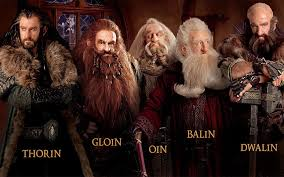

Cüceler, Orta Dünya'da Khazad, Naugrim ('Bodur İnsanlar' anlamına gelir) ve Gonnhirrim ('Taş Ustaları' anlamına gelir) olarak da bilinen bir ırktı.
Cüceler kısa, bodur bir ırktı. Hobbitlerden biraz daha uzun ve daha geniş ve ağırdılar. Cücelerin çoğu, gurur duydukları kalın, bereketli sakallara sahipti ve sık sık onları çatalladılar ya da örttüler ve onları kemerlerine soktular. Basit dayanıklı giysiler, renkli davlumbazlar ve seyahat için ağır pelerinler ve altın ya da gümüş kemerler tercih ettiler. Askerleri savaş için, cüce işçiliğinin sembolü olan çeşitli açılar ve stiller taşıyan özenle hazırlanmış zırh ve kasklar giyerdi. Zırhları bakılmayacak kadar iğrenç semboller (Gözleri korumaya yönelik dövme kalıplarında kullanılanlardan sonra) ile maskelenmişti. Cüce kadınlar, erkekler ile aynı şekilde, ses ve görünüşe sahipti. Sayıları azdı, tüm cüce türlerinin üçte birinden daha azdı ve nadiren kendi salonlarının dışında görülüyorlardı. Çoğu zaman cüce toplumunda bekçi ve zanaatkarlar olan görevlerinden dolayı fazla ortalarda görünmüyorlardı. Genellikle çok ihtiyaç duydukları zaman seyahat ederlerdi ve genellikle cüce erkeklere benzer şekilde giyinmişlerdi. Bu genellikle başkalarının, cücelerin yaratıldığı zaman taştan büyüdüğü ve cüceler arasında kadın olmadığına inanmasına neden oldu. Birkaç dişi cüce savaşçı biliniyordu, ancak bazı öyküler kadın cücelerin, özellikle ailelerini ve yavrularını korumakta, erkek meslektaşları kadar şiddetli olduklarını söyler. Cüceler genellikle tek eşliydi ve cüce erkeklerinin üçte birinden azı bir eş aldı, geri kalanı da kendi işleriyle meşguldü.
Cüceler gururlu ve sert bir ırktı ve zamanlarının tehlikelerine karşı dayanıklı olmaları için zorlandılar. Fiziksel olarak çok güçlüydüler, özellikle sıcağa ve soğuğa direnç gösterme kabiliyetine sahiplerdi ve ağır yükler onlar için hafifti. Cüceler insanlardan daha uzun, genellikle iki yüz elli yıla kadar yaşadılar.[1] Birinci ve İkinci Çağ'ın cüce lordları birkaç yüz yıl yaşayabilirdi. Cüceler, özellikle metal veya taşla uğraşanları yeni zanaat becerilerini hızla öğrenme yeteneğine sahipti. Cüceler tipik olarak inatçı, gizli ve arkadaşlarına son derece sadıktı. Elflerin kıskançlıklarına neden olan madencilik, zanaat, el sanatları, altın ve değerli taşlara değer veriyorlardı. Cüceler kaba yorumlarla kolayca kırılırdı ve uzun süre kin tutmaya meyilliydiler. Genellikle açgözlü olarak görülürdüler ancak doğaları onlara verilen Güç Yüzüklerinin kötülüğü de dahil olmak üzere pek çok dış etkene karşı direnç gösterdi. Dokuz yüzüğe sahip olan insanlar bozuldu ve Nazgûl oldular. Cüceler ise altına olan şehvetleri ve hazineleri olarak algıladıkları şeylerle aralarına girenlerden nefret etmeleri dışında etkilenmediler.
Cücelere Vala Aulë tarafından özel beceriler kazandırıldı ve zamanlarının çoğunu büyük yeraltı şehirlerinde ustalık, demircilik ve madencilik yaparak geçirdiler. Cüceler, Orta Dünya'da varolan en büyük madencilerdendi. Cüceler, şehirlerini kurdukları dağların altında muazzam salonlar kazdılar. Cüce madenciler Orta Dünya'daki dağların her yerinden altın, demir, bakır ve gümüş gibi kıymetli madenleri kazdılar, ancak kömür madenciliğinin aşağılayı olduğunu düşünürler. Eski zamanlarda, cüceler Khazad-dûm madenlerinde Mithril'i buldular. Yalnız Dağ'ın altında madencilik yaparken, dağın kalbindeki Arkentaşı'nı keşfettiler. Ayrıca yetenekli taş ve demir ustaları da vardı - Cüce demircilik becerileri ile yalnızca elflerin rekabet edebileceği söylenirdi, duvar ustalıklarında ise en iyisiydiler. Cücelerin yetenekleri eşsizdi; elmas, zümrüt, yakut ve safirden harika güzellikteki nesneler yaptılar. Cüce elinden çıkan her şey güzel hazırlanmış ve karmaşıktı. Birçok ünlü silah, zırh ve sanat ve güzellik eşyası hazırladılar; aralarında Elendil'in kılıcı Narsil, Dor-lómin'in Ejderha Miğferi ve kolye Nauglamír vardı. Cüce orduları geniş ve güçlüydü, engin asker, süvari ve kuşatma silahlarına sahipti ve askerleri savaş için güçlü silahlar, zırhlar ve araçlar ile donatılmıştı. Kılıç, balta, fırlatılan balta, fırlatılan bıçak ve savaş çekici gibi askerleri tarafından birçok farklı silah kullanılmıştır. Neredeyse her şeyden herhangi bir yerde ateş yakmak için bir püf noktaları vardı. Nasıl olduğunu bilseler de, cüceler zamanlarını yeraltı madenciliği ve işçiliği için harcamayı tercih ettikleri için çiftçilik ve hayvancılık pek yapmazlardı. Genellikle yemek karşılığında insanlar ve elflerle ürettikleri eşyaları takas ederlerdi.
Cücelere Vala Aulë tarafından özel beceriler kazandırıldı ve zamanlarının çoğunu büyük yeraltı şehirlerinde ustalık, demircilik ve madencilik yaparak geçirdiler. Cüceler, Orta Dünya'da varolan en büyük madencilerdendi. Cüceler, şehirlerini kurdukları dağların altında muazzam salonlar kazdılar. Cüce madenciler Orta Dünya'daki dağların her yerinden altın, demir, bakır ve gümüş gibi kıymetli madenleri kazdılar, ancak kömür madenciliğinin aşağılayı olduğunu düşünürler. Eski zamanlarda, cüceler Khazad-dûm madenlerinde Mithril'i buldular. Yalnız Dağ'ın altında madencilik yaparken, dağın kalbindeki Arkentaşı'nı keşfettiler. Ayrıca yetenekli taş ve demir ustaları da vardı - Cüce demircilik becerileri ile yalnızca elflerin rekabet edebileceği söylenirdi, duvar ustalıklarında ise en iyisiydiler. Cücelerin yetenekleri eşsizdi; elmas, zümrüt, yakut ve safirden harika güzellikteki nesneler yaptılar. Cüce elinden çıkan her şey güzel hazırlanmış ve karmaşıktı. Birçok ünlü silah, zırh ve sanat ve güzellik eşyası hazırladılar; aralarında Elendil'in kılıcı Narsil, Dor-lómin'in Ejderha Miğferi ve kolye Nauglamír vardı. Cüce orduları geniş ve güçlüydü, engin asker, süvari ve kuşatma silahlarına sahipti ve askerleri savaş için güçlü silahlar, zırhlar ve araçlar ile donatılmıştı. Kılıç, balta, fırlatılan balta, fırlatılan bıçak ve savaş çekici gibi askerleri tarafından birçok farklı silah kullanılmıştır. Neredeyse her şeyden herhangi bir yerde ateş yakmak için bir püf noktaları vardı. Nasıl olduğunu bilseler de, cüceler zamanlarını yeraltı madenciliği ve işçiliği için harcamayı tercih ettikleri için çiftçilik ve hayvancılık pek yapmazlardı. Genellikle yemek karşılığında insanlar ve elflerle ürettikleri eşyaları takas ederlerdi.
Yalnız Dağ, Belegost, Nogrod, Khazad-dûm, Thranduil Salonları ve Menegroth gibi birçok ünlü salon inşa ettiler. Cüceler Minas Tirith'in kapılarını da yeniden düzenledi ve Yüzük Savaşı'ndan sonra Miğfer Dibi'nin duvarlarını yeniden inşa ettiler. Şehirleri dağ sıralarında veya dağların hemen altında inşa edildi. Cüce madenciler bir giriş oluşturmak için önce dağın içine doğru kazdılar ve sonrasında şehirleri için temel oluşturmak üzere ileri ve dağın altına doğru kazdılar. Cüce şehirleri kesinlikle büyük ve çok genişlerdi ve dünyanın uzak derinliklerine ulaşıyorlardı. Şehirlerinde madenlerini genişletmeye ve değerli metaller ve mineraller gibi daha fazla kaynak keşfetmeye devam ettiler. Cüce şehirleri dağlar ve dağ sıraları boyunca ilerledi, yüzeyin altındaki dev mağaralarda yukarı, aşağı ve yana doğru genişledi, ancak şehirlerin nasıl yapılandırıldığı ve bölündüğü büyük ölçüde bilinmiyordu. Khazad-dûm'da, Kayıtlar Odası veya Mazarbul Odası olarak ta bilinen kentin bir bölümü vardı. Şehrin "İlk Salon", "İkinci Salon", "Üçüncü Derin", "Yirmi birinci salon" ve "Kuzey ucu" gibi Mazarbul Kitabında belirtilen bölümleri de vardı.[4] Cücelerin şehirlerinin güzelliği efsaneydi. Kalelerden biri olan Erebor (Yalnız Dağ'da bulunur), zenginliğini kıymetli taşlardan ve "taşlardan akan nehirler gibi akan büyük altın yataklarından" alıyordu. Cücelerin yerleştiği yerlere Ortak Lisanda verilen isimlerden biri cücelerce delinmiş anlamına gelen Phurunargian idi.


Moria, Khazad-Dum veya Dwarrowdelf olarak da bilinir, Durin Halkı'nın Cüceleri tarafından İlk Çağ'da, Ölümsüz Durin I'in hükümdarlığı altında kurulan ilk büyük alemdi. Sisli Dağlar'da Caradhras, Celebdil ve Fanuidhol dağlarının altında bulunan mağara benzeri bir alemdi ve Cüceler burada Mithril madenciliği yapıyordu. Moria, Dimril Dale'i bulduğunda Durin I "Deathless" tarafından kuruldu. Mithril Madenleri'nde gelişti ve Eregion, Lorien, Mavi Dağlar'daki Belegost, Gondolin ve Nargothrond ile ticaret yaptığı biliniyordu. Durin, Durin Halkı'nın Kralı ve diğer altı Cüce Krallığı'nın hükümdarı oldu ve Durin Soyunu kurdu. Kendisine özel bir benzerlik taşıyan torunlarından bazılarına Durin adı verildi. Bunlardan üçüncüsü, Moria'lı Durin III, yedi Cüce Güç Yüzüğü'nün ilki kendisine verildi. Moria Cüceleri refaha kavuştular ve aşılmaz kapıları, İkinci Çağ'da Sauron'un yakınlardaki Eregion'u yağmalamasına ve Angmar zamanında Kuzey'den gelen ve Puslu Dağlar'daki Gundabad ve Goblin kasabası gibi yerleri istila eden Orklar'ın saldırısına karşı koymalarını sağladı. Ancak cüceler çok açgözlülükle ve çok derinlere daldılar ve ÜÇ 1980'de Balrog uyandı. Balrog, kralları Durin VI ve Nain I'i öldürdü ve cücelerin 1981'de kaçmasına ve Erebor Krallığı'nı kurmasına neden oldu. Erebor'un kendisi Smaug'a yenildikten sonra, kralı Thrór ÜÇ 2799'da Moria'yı geri almaya çalıştı ancak Orklar tarafından istila edildiğini gördü. Şefleri Azog tarafından öldürüldü, ancak torunu Thorin Oakenshield Cüceleri Orklar'a karşı zafere taşıdı. Ancak, kayıpları Moria'yı geri almak için çok ağırdı. Azog hala yaşıyordu ve Orklar Moria'da çoğaldı, Dol Guldur'da Sauron ile ittifak kurdular. ÜÇ 2941'de Dol Guldur'da toplandılar ve ordusunu kurdular, Azog bu orduyu Beş Ordunun Savaşı'nda Cücelere, İnsanlara ve Elflere karşı yönetti.


Yalnız Dağ ( S. Erebor ) , Rhovanion'un kuzeydoğusundaki büyük bir dağdı . Running nehrinin kaynağıydı ve Üçüncü Çağ'ın sonunda ve Dördüncü Çağ'ın başlarında Dağ'ın altında Krallığın önemli bir Cüce kalesiydi .
Uzunsakallılar , en azından İkinci Çağ'ın başlarından beri Erebor'un kontrolünü elinde tutuyordu . Khazad-dûm başkentinde Durin'in Felaketi'nin uyanmasıyla Thráin I, bir grup Cüceyi Erebor'a götürdü. Cüceler oraya vardıklarında mağaralar ve salonlar kazarak bir yeraltı şehri oluşturdular ve böylece 1999'da Dağ Altındaki Krallığı kurdular . [ 2 ] Thráin'in yönetimi sırasında dağın derinliklerinden Arkenstone da dahil olmak üzere birçok zenginlik çıkarıldı . [3 ] Thráin'in oğlu Thorin I , büyük ölçüde keşfedilmemiş ve daha zengin olan Gri Dağlar lehine Dağ'ı ÜÇ 2210'da terk etti. Thorin I ayrıca Uzunsakalları yeniden birleştirmeyi umuyordu . Bu dağlar muhtemelen Erebor'dan daha büyüktü; ancak ÜÇ 2590'da Cüceler ve Ejderhalar arasındaki savaştan sonra , Kral Thrór bir grubu Yalnız Dağ'a geri götürdü ve onu Durin halkının başkenti olarak yeniden kurdu, ancak bazıları kardeşi Grór'u Demir Tepeler'e kadar takip edecekti . [2] Erebor bir kez daha refaha kavuştu ve bölgenin artan refahı, İnsanlar tarafından Erebor'un yamaçları arasına inşa edilen Dale kasabasının [4] kurulmasına yol açtı . Cüceler madencilik yaptı ve Yalnız Dağ'daki önceki zamanlarından daha büyük tüneller ve salonlar yaptı. Erebor Cüceleri, Dale İnsanları tarafından Saygıyla karşılandı. Bu iki yerleşim yeri arasındaki Pazar ve ilişki, Kuzey'in harikasıydı. Ancak, bu zamanın mutluluğu uzun sürmedi.


BALİN
MEŞEKALKAN
EROBOR CÜCELERİ
GİMLİ

EROBOR